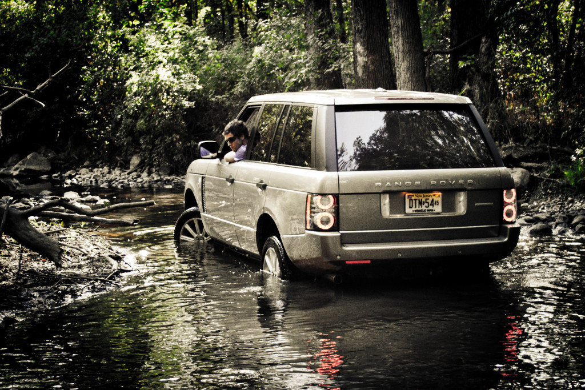

947 yılında bir adam; Galler sahilinin kumlarına temel kuramları ile bir otomobil taslağı çizer. Çizilen bu araç Land Rover markasıdır. Çizimleri ile beraber bu sert, gözü pek araç dünyayı her anlamda değiştirmek, dünya üzerinden her türlü arazi koşuluyla başa tam olarak çıkabilmek ve tüm dünyada bu konuda yer alan kalpleri fethetmek üzere yola çıkmıştır. Land Rover, İngiliz bir arazi aracı markasıdır.
Bu şirketin merkezi Solihull, İngiltere’de yer almaktadır. Aslında Rover markası içerisinde yer alan bir modelin ad olarak yer alıyordu. Bugün İngiliz markası Tata Motor Şirketi bünyesinde yer almaktadır. 26 Mart 2008 yılında Ford Motor Şirketi tarafından Hindistan araba üreticisi olarak yer alan Tata ‘ya satılmıştır. Arazi koşulları içerisinde ne durumda olursa olsun eksiksiz olarak güven sunabilen bir araç yaratırken, bu konuda her zaman yeni nesil maceracılara da yol göstermeye devam ediyor.
Land Rover tarafından üretimi gerçekleştirilen ilk araç 30 Nisan tarihinde Amsterdam Auto Show’da sergilendi. Sergilenen bu araç 80’lik olarak bulunan şasili, sürekli durumda dört çeker, tente tavanlı ve bu konuda tam olarak isteğe alınabilen kapılara sahip olarak yer almaktadır. Ancak üç ay içinde kapılar bu konuda yüksek standart olarak üretildi. Ekim ayında ise ilk station wagon modeli piyasaya sunuldu. 1957 yılı içerisinde ilk dizel motorlu Land Rover markası üretime sunuldu. 1966 yılı ilk çeyreğinde 500.000’inci Land Rover markası üretime sunuldu. 1976 yılında ise 1.000.000’uncu Land Rover üretim bantlarından çıktı.
1994 yılında markanın satın alımını gerçekleştiren BMW; 6 yıl sonra, 2000 yılında Land Rover’ı Ford Motor Company’e devretmiş; 8 yıl sonrasında, 2008 yılında ise Hindistanlı motor üreticisi Tata Motors tarafından satın alınmıştır. Günümüzde de Land Rover’ın sahibi Tata Motors firmasıdır.
